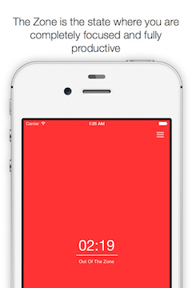
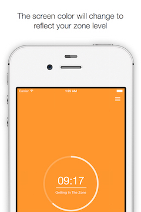
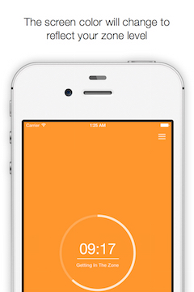
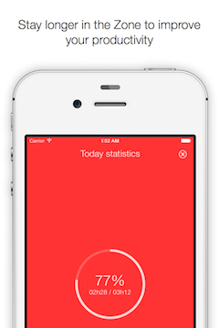
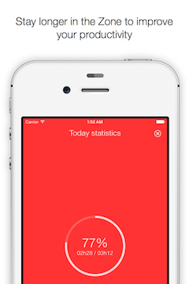

In The Zone
Stay Focused And Boost Your Productivity
In The Zone is a minimalist app and a powerful tool that helps you stay focused and improve your productivity.
"Knowledge workers work best by getting into "flow", also known as being "in the zone", where they are fully concentrated on their work and fully tuned out of their environment [...]. This is when they get all of their productive work done."
Joel Spolsky
Joel Spolsky
"When you have a long stretch when you aren't bothered, you can get in the zone. The zone is when you are most productive [...]. It's when you aren't interrupted to answer a question or look up something or send an email or answer an im."
37Signals
37Signals
What is the Zone?
The Zone is the state where you are completely focused and fully productive.
It takes time to get there, but the slightest distraction can knock you out of it and you have to start over.
It takes time to get there, but the slightest distraction can knock you out of it and you have to start over.
Screenshots
 

 

When to use this app?
Use this app when working on tasks that require uninterrupted focus.
How to use this app?
Tap when you start entering the Zone.
Tap when your get out of the Zone for any reason.
That's it!
Tap when your get out of the Zone for any reason.
That's it!
How does this app work?
The screen color will change according to your Zone level.
Red indicates that you are out of the Zone.
Yellow indicates that you are in The Zone.
The timer indicates how much time you have been in the current Zone.
The app will automatically transition out of the Zone when you use your phone to answer a call, lock the screen, switch to another app, ...
Red indicates that you are out of the Zone.
Yellow indicates that you are in The Zone.
The timer indicates how much time you have been in the current Zone.
The app will automatically transition out of the Zone when you use your phone to answer a call, lock the screen, switch to another app, ...
How does this app help?
The act of launching the app and starting to get in the zone is a commitment to work. It can prevent you from procrastinating and is a good motivator to actually start working and to keep distractions away.
The timer can help you decide if it's a good time to take a pause because you've been in the Zone for a long period, or if it is better to continue working because you've just entered the Zone.
Your colleagues will notice the color change from yellow to red. This is a great signal that helps them understand the impact of interruptions on your productivity.
Statistics help you measure your daily productive time.
The timer can help you decide if it's a good time to take a pause because you've been in the Zone for a long period, or if it is better to continue working because you've just entered the Zone.
Your colleagues will notice the color change from yellow to red. This is a great signal that helps them understand the impact of interruptions on your productivity.
Statistics help you measure your daily productive time.